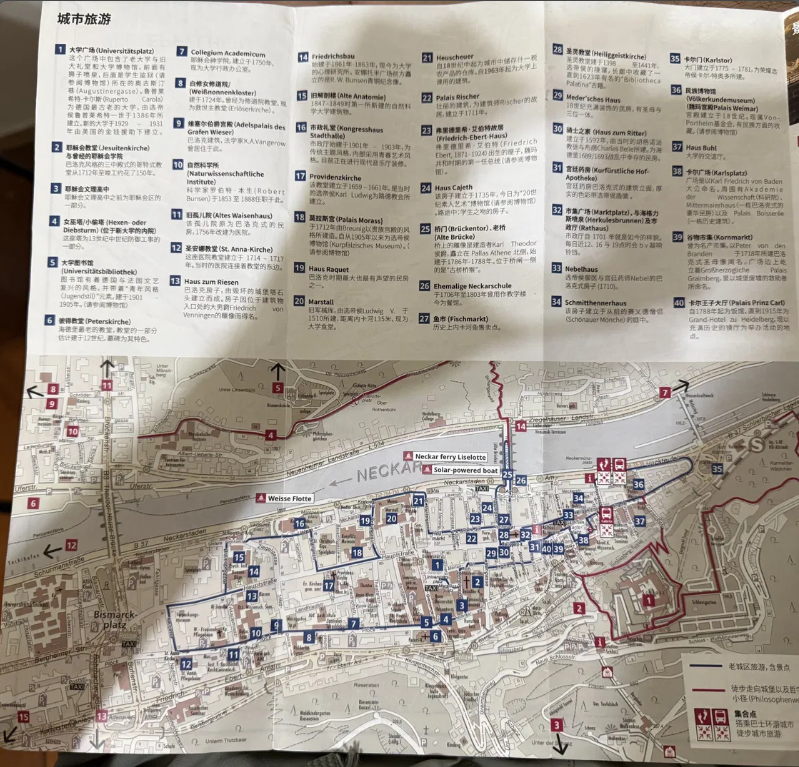

醉旅宿 Merry Journey 頻道的東京旅遊系列：住宿推薦・市場美食・近郊景點・交通票券完整攻略
沿著內卡河漫步，探索哲學家小徑、老橋與千年大學城的歷史氣息。
在花旗球場感受大聯盟現場的氛圍，賽後探索紐約街頭。
海德堡是德國最具浪漫氣息的城市之一，沿著內卡河漫步，歷史建築與自然景色交融。城市的核心是市集廣場，四周環繞著幾百年歷史的建築。
從市集廣場步行幾分鐘可到大學廣場，這裡是海德堡大學的中心，建於1386年，是德國最古老的大學之一。廣場上的學生咖啡館充滿了學術氣氛。

我們在花旗球場看了一場大聯盟比賽，賽後步行到附近的南翔小籠包吃宵夜。點擊地名超連結，左側地圖會自動跳轉到對應位置。
地圖上的圖釘是從資料庫中這篇故事的真實地標，點擊圖釘可以看到地標名稱與描述。地圖左下角的「← 回索引」按鈕可以回到索引視角。
醉旅宿 Merry Journey・9 篇文章
醉旅宿 Merry Journey 頻道的東京完整旅遊系列，涵蓋住宿選擇、市場美食、近郊行程與交通票券攻略。點擊下方文章進入詳細內容，地圖將同步顯示對應地標。
從機場進市區、IC 卡使用技巧，到 JR 東京廣域周遊券的划算計算方式。
山手線沿線三個優質住宿區域，各有不同特色與周邊設施。
兩大市場的特色與必吃推薦，從海鮮丼到玉子燒全面比較。
來自北海道的兩家人氣迴轉壽司，精緻 vs CP 值怎麼選？
現代潮流與傳統文化的對比：360 度觀景台 vs 復古祭典市集。
周遊券搭配箱根神社、大涌谷、鎌倉大佛與吻仔魚丼。
搭江之電穿梭古都與海邊，灌籃高手聖地與靜謐燈塔夜景。
世界遺產東照宮、華嚴瀑布、鬼怒川秘境足湯兩天一夜深度遊。
搭乘豪華海景觀光列車，遊覽大室山與小室山的火山地形。
前往羽田機場最方便的車站，搭京急線約15–20 分鐘抵達羽田。推薦入住品川王子大飯店——車站步行約 2 分鐘，高樓層可眺望東京鐵塔，設施含游泳池、保齡球館、電影院。
車站旁有Maxell Aqua Park 水族館，規模精緻，有海豚表演（前四排注意被噴水）。
山手線下一站，多一條臨海線可直達台場，氛圍更有「東京生活感」。推薦New Otani Inn Tokyo，與車站相連、有遮雨走廊，房型比一般商務旅館寬敞。飯店後方的OAKI New City 有大型超市（和牛、熟食）、大創與多樣餐飲。
可轉乘都營淺草線，直達晴空塔、銀座、日本橋，部分班次甚至直達成田機場。推薦東急 Stay 五反田——A6 出口步行不到 10 秒，房內有洗衣機與微波爐，長天數旅遊最實用。步行 1 分鐘即達五層樓的唐吉訶德，購物紀念品超方便。
必備「箱根鎌倉三日周遊券」，約 7,250 日圓，可於新宿南口服務中心購買。涵蓋新宿往返箱根、箱根地區 8 種交通工具（登山電車、海賊船等）及鎌倉地區小田急線。若想搭「浪漫特快」列車，需加購特級券約 1,000 日圓。
田村銀勝亭是強羅必吃名店，招牌炸豬排豆腐便當，豆腐口感紮實。餐後可前往強羅公園體驗玻璃珠或耳環製作（約 45 分鐘製作、50 分鐘冷卻，可隔天取件）。
隔天早上從強羅公園移動到箱根神社，建議 10 點前抵達。
建議早上 10 點前抵達箱根神社避開人潮，接著搭乘海賊船橫越蘆之湖前往桃源台。途中別錯過大涌谷，必吃黑蛋——據說一顆可延壽七年。
建議早起前往鎌倉高校前，避開白天的《灌籃高手》聖地朝聖人潮。鎌倉大佛側面有內部參觀通道，可觀察結構細節。別忘了在腰越漁港吃一碗當地特產吻仔魚丼（しらす丼），最後逛小町通補貨伴手禮。
豐洲市場是原築地市場「場內」的現代化升級版，環境整潔。搭東京地鐵至「市場前站」，出站後沿二樓走廊即達。建議早上 8–9 點抵達，避免熱門店家食材售罄，也能避開 10–11 點的人潮高峰。場內的千里軒（Senriken）是老字號咖啡廳，冰咖啡味道調配平衡，帶有濃郁奶香。
築地場外市場保留了傳統市場的熱鬧氛圍，充滿地道生活感，是體驗「東京廚房」的好地方。必吃玉子燒（日式厚蛋燒）——口感鬆軟、高湯香濃，以及草莓大福——麻糬皮軟糯、草莓酸甜多汁。若你偏好傳統市集的人情味勝過現代化空間，築地會帶來更深刻的旅遊體驗。
根室花丸有樂町本店是東京迴轉壽司的頂尖選擇。需現場抽號碼牌，等候約 1–2 小時，但領牌後可離開逛街再回來。人均約台幣 500–600 元。
強力推薦：鮭魚（肉質鮮嫩彈牙、富含油脂）、鮪魚大腹（油脂豐富且性價比高）、花枝（鮮甜）、花咲蟹味噌湯。整體在東京迴轉壽司中絕對排進前三。
TORITON 豐洲店同樣來自北海道，主打平價高 CP 值。同樣需現場抽號碼牌，建議預留 1.5 小時候位時間。人均約台幣 400–500 元。提供多種組合盤，適合想嘗試多樣口味的旅客。
追求精緻與食材鮮度 → 選根室花丸；注重 CP 值 → 選 TORITON。兩家都需排隊，規劃行程時請預留候位時間。
從新宿站搭乘「Spacia 日光號」直達東武日光站，班次較少，建議提前確認時刻表。當地移動建議自駕以獲得最高彈性；若不自駕，可使用東武鐵道的公車 Free Pass。
建議安排兩天一夜，若只有一天會較匆忙。可使用 JR 東京廣域周遊券（3 日，約需計算是否划算）。
必訪鬼怒盾岩大吊橋，橫跨峽谷景色壯麗，下雨天也有獨特氛圍。橋旁有一處秘境免費足湯，人少幽靜，邊泡腳邊欣賞鬼怒川。
搭乘明智平纜車登上展望台，可同時眺望中禪寺湖、男體山與華嚴瀑布全景。接著近距離欣賞華嚴瀑布——日本三大瀑布之一，落差 97 公尺，搭電梯深入岩壁下方可看正面全景。
日光東照宮是德川家康的祭祀地，世界遺產。重點看：巨石疊成的鳥居、五重塔，以及裝飾極其精緻的陽明門。附近有明治時期留下的洋食館「明治之館」，推薦漢堡排與蛋包飯。日光以豆皮（湯波）聞名，口感比一般豆皮厚實，記得嘗嘗。
這是 JR 東日本專為觀光設計的豪華特急列車，從東京出發，沿東海岸南下至伊東、修善寺方向，沿途可欣賞絕佳海景。全車皆為商務車廂，座椅舒適，適合一趟特別的鐵道體驗。建議事先預訂，可搭配 JR 相關周遊券使用。
大室山是伊豆的代表景點，搭纜車登頂可俯瞰獨特的火山口地形，視野開闊壯麗。小室山設有步道與展望台，可遠眺相模灣。
伊豆半島的兩天一夜行程，建議第一天搭乘 SAPHIR 踴子號享受鐵道體驗，第二天租車遊覽大室山、小室山等景點，彈性較高。
這趟旅程的核心是江之島電鐵，這條復古電車穿梭在古都街道與海邊之間，充滿日式旅遊氛圍。《灌籃高手》迷必去鎌倉高校前的平交道，建議早起（7–8 點前）以避開白天大批朝聖人潮。
建議在江之島住一晚，避開白天人潮後，夜晚的Sea Candle 燈塔與靜謐的島上街道是白天完全不同的氛圍。記得參拜江島神社，沿坡道而上穿過鳥居別有情趣。
鎌倉大佛（高德院）除了正面拍照，側面有內部參觀通道，可了解青銅大佛的結構細節。鎌倉歷史豐富，附近有多處寺廟神社值得慢慢探索，不建議塞太多景點。
SHIBUYA SKY 位於澀谷 Scramble Square 大樓頂層（47–49 樓），提供 360 度無死角的東京市區全景，是目前東京最熱門的觀景台。建議事先在官網預訂門票，避免現場買票排隊或撲空。入夜後的夜景尤其迷人，可俯瞰澀谷十字路口的燈海。
參拜完淺草寺後，可前往附近的淺草橫町（位於東京楽天地淺草大樓內）。這裡集結了多家特色飲食攤位，節慶風格裝潢充滿濃厚的日本傳統文化感，和淺草寺的古樸氛圍相映成趣。
這兩處分別代表了東京「現代潮流」與「傳統文化」的極致對比，排在同一天行程中相當合適。
羽田機場：搭京急線至新宿約 35 分鐘，交通最便利，推薦以品川作為住宿據點。成田機場：搭 N'EX 成田特快進市區，若持有 JR 東京廣域周遊券可免費搭乘，大幅節省費用。
東京都的地鐵分 Tokyo Metro 與都營地下鐵兩套系統，但實際轉乘幾乎無縫。建議購買 IC 卡（Suica 或 PASMO），可在幾乎所有交通工具與便利商店使用，避免每次購票的麻煩。
有效期 3 天，可不限次數搭乘多條 JR 線路，適合安排東京近郊行程（日光、鎌倉、箱根方向等）。
購買前建議試算：如果三天總交通費超過 15,000 日圓才划算。例如單純去輕井澤來回約 12,000 日圓，那反而直接買票更便宜。此券可於新宿南口服務中心等指定地點購買。
這篇文章用於測試 美國各州 的區域渲染功能。點擊任一州名可縮放地圖至該州。
緬因州（Maine）是美國最東北端的州，以龍蝦與燈塔聞名。 南側緊鄰的 新罕布什爾州（New Hampshire） 是美國最小的幾個州之一。 佛蒙特州（Vermont） 以楓糖漿與滑雪勝地著名。 麻薩諸塞州（Massachusetts） 首府波士頓是美國最古老的城市之一，擁有哈佛大學與MIT。 羅德島州（Rhode Island） 是美國面積最小的州。 康乃狄克州（Connecticut） 是美國最富裕的州之一。 紐約州（New York） 坐擁世界金融中心曼哈頓與尼加拉瀑布。 紐澤西州（New Jersey） 緊鄰紐約，以化工與製藥產業聞名。 賓夕法尼亞州（Pennsylvania） 擁有費城（美國獨立發祥地）與匹茲堡（鋼鐵城市）。 德拉瓦州（Delaware） 是美國第一個批准憲法的州，企業法人登記首選地。 馬里蘭州（Maryland） 環繞首都華盛頓特區，以切薩皮克灣螃蟹聞名。
維吉尼亞州（Virginia） 是美國第一個永久殖民地所在地，首府里奇蒙曾是南北戰爭南方邦聯首都。 西維吉尼亞州（West Virginia） 是美國南北戰爭期間從維吉尼亞分離出的州。 北卡羅來納州（North Carolina） 以科技研究三角區（Research Triangle）聞名。 南卡羅來納州（South Carolina） 以查爾斯頓的歷史建築與海灘著稱。 喬治亞州（Georgia） 首府亞特蘭大是可口可樂與CNN的誕生地。 佛羅里達州（Florida） 擁有迪士尼世界、邁阿密海灘與甘迺迪太空中心。 肯塔基州（Kentucky） 以波本威士忌與賽馬（肯塔基德比）聞名。 田納西州（Tennessee） 是鄉村音樂發源地，納什維爾與孟菲斯是重要音樂城市。 阿拉巴馬州（Alabama） 是美國民權運動的重要發生地，伯明罕與塞爾瑪留有歷史遺跡。 密西西比州（Mississippi） 是美國最長河流密西西比河的命名來源，也是藍調音樂的故鄉。 阿肯色州（Arkansas） 以奧扎克山脈（Ozark Mountains）的自然景觀聞名。 路易斯安那州（Louisiana） 以紐奧良的爵士樂、法式克里奧文化與卡真料理聞名。
俄亥俄州（Ohio） 是美國工業重鎮，克里夫蘭搖滾名人堂座落於此。 印第安納州（Indiana） 以印第安納波利斯 500 英里賽車聞名。 伊利諾州（Illinois） 首府芝加哥是美國第三大城市，以深盤披薩與摩天樓聞名。 密西根州（Michigan） 是全球汽車製造業重鎮，底特律為汽車之城。 威斯康辛州（Wisconsin） 以乳酪生產聞名，暱稱「乳酪州」。 明尼蘇達州（Minnesota） 是美國湖泊最多的州，首府明尼亞波利斯以藝術與文化著稱。 愛荷華州（Iowa） 是美國最重要的農業州之一，以玉米與黃豆產量稱雄。 密蘇里州（Missouri） 首府聖路易擁有標誌性的拱門（Gateway Arch）。 北達科他州（North Dakota） 以石油生產與壯麗草原景觀聞名。 南達科他州（South Dakota） 以拉什莫爾山（Mount Rushmore）的四位總統雕像聞名。 內布拉斯加州（Nebraska） 是美國玉米帶核心，奧馬哈是重要金融與食品中心。 堪薩斯州（Kansas） 位於美國大陸地理中心附近，以「龍捲風走廊」著稱。
德克薩斯州（Texas） 是美國面積第二大、人口第二多的州，以牛仔文化、石油與科技業著稱。 奧克拉荷馬州（Oklahoma） 是美國原住民部落密度最高的州之一。 新墨西哥州（New Mexico） 以羅斯威爾（Roswell）外星文化與白沙國家公園聞名。 亞利桑那州（Arizona） 擁有世界奇觀大峽谷（Grand Canyon）。 科羅拉多州（Colorado） 以落磯山脈、滑雪場與大麻合法化聞名。 猶他州（Utah） 擁有五座國家公園，包括錫安（Zion）與拱門（Arches）。 內華達州（Nevada） 以拉斯維加斯賭城與胡佛水壩聞名，是娛樂業首都。 懷俄明州（Wyoming） 是美國人口最少的州，黃石國家公園座落於此。 蒙大拿州（Montana） 以冰川國家公園（Glacier National Park）與廣袤荒野聞名。 愛達荷州（Idaho） 以馬鈴薯產量聞名，太陽谷（Sun Valley）是著名滑雪勝地。
加利福尼亞州（California） 是美國人口最多的州，好萊塢、矽谷與納帕谷葡萄酒產區皆座落於此。 奧勒岡州（Oregon） 以波特蘭的咖啡文化、克雷特湖（Crater Lake）與俄勒岡步道聞名。 華盛頓州（Washington） 以西雅圖（微軟、亞馬遜、星巴克總部）與雷尼爾山聞名。 阿拉斯加州（Alaska） 是美國面積最大的州，以極光、冰川與野生鮭魚著稱。 夏威夷州（Hawaii） 是美國唯一完全位於太平洋中的州，以火山、衝浪與烏克麗麗聞名。